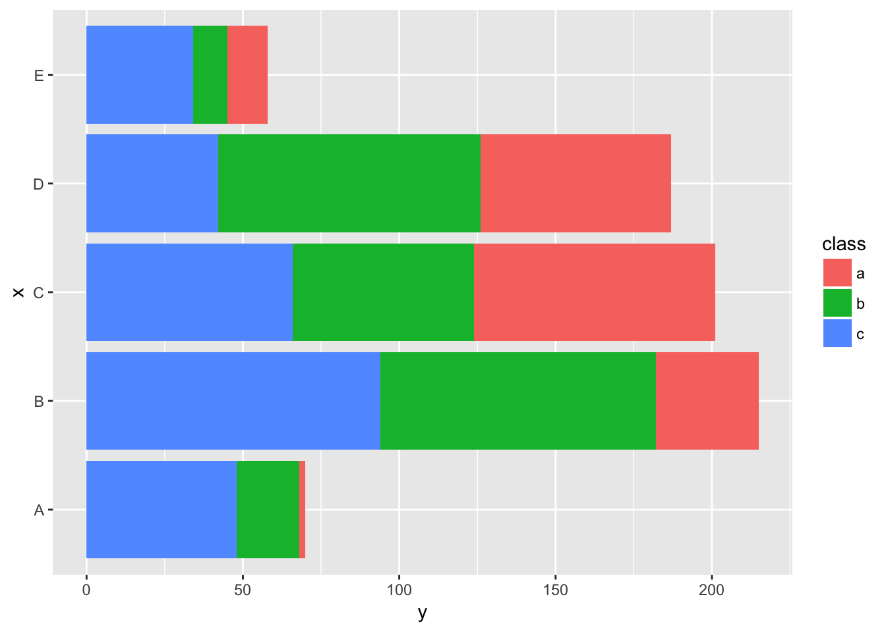
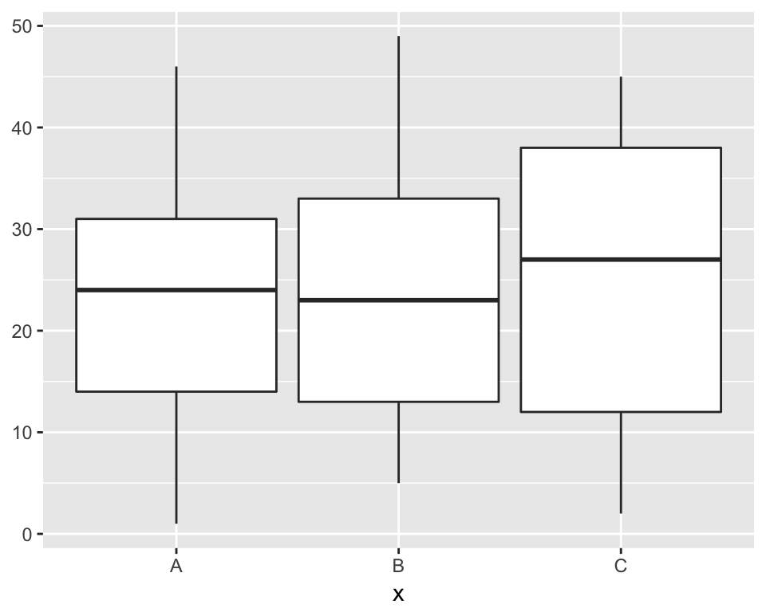

geom_abline, geom_hline and geom_vlineggplot(data = mtcars) +
geom_point(mapping = aes(x=0, y=5),
stat = "identity",
position = "identity",
col = "red") +
geom_abline(intercept = 5, slope = 2) +
geom_hline(yintercept = 2.5, col = "blue") +
geom_vline(xintercept = 5.0, col = "red") +
geom_text(mapping = aes(x=2, y=5),
stat = "identity",
position = "identity",
label = "intercept = 5, slop = 2") +
geom_text(mapping = aes(x=2, y=1.5),
stat = "identity",
position = "identity",
label = "yintercept = 2.5") +
geom_text(mapping = aes(x=5.2, y=7.2),
stat = "identity",
position = "identity",
label = "xintercept = 5.0",
angle = 270) +
coord_cartesian(xlim = c(0,10), ylim = c(0, 10)) +
facet_grid(am~.)geom_bar and geom_colgeom_bar uses stat_count to calculate the y values by default.geom_col uses stat_identity by default. You will need to provide the y mapping.ggplot(data = mpg) +
geom_bar(mapping = aes(x=class, fill=factor(cyl)),
position = position_stack()) +
coord_flip()my_data = data.frame(x = rep(LETTERS[1:5], each=3),
y = sample(1:100, 15),
class = rep(letters[1:3], 5))
ggplot(data = my_data) +
geom_col(mapping = aes(x=x, y=y, fill=class),
position = position_stack()) +
coord_flip()
geom_bind2dgeom_bind2d maps x, y and z to a coordinate system. z is the counts for each xy combination. If x and y are numeric, x and y are split into series of intervals (bin).ggplot(data = mpg) +
geom_bin2d(mapping = aes(x=manufacturer, y=displ)) +
theme(axis.text.x = element_text(angle = 90))geom_boxplotgeom_boxplot uses stat_boxplot to convert y into lower, upper, middle, ymin and ymax.ggplot(data = mpg) +
geom_boxplot(mapping = aes(x=manufacturer, y=displ, fill=fl)) +
theme(axis.text.x = element_text(angle = 90))stat_identity, which doesn’t transform the data.my_data = data.frame(x = LETTERS[1:3],
ymin = sample(1:10,3),
lower = sample(11:20, 3),
middle = sample(21:30, 3),
upper = sample(31:40, 3),
ymax = sample(41:50, 3))
ggplot(data = my_data) +
geom_boxplot(mapping = aes(x=x, ymin=ymin, lower=lower,
middle=middle, upper=upper, ymax=ymax),
stat = "identity")